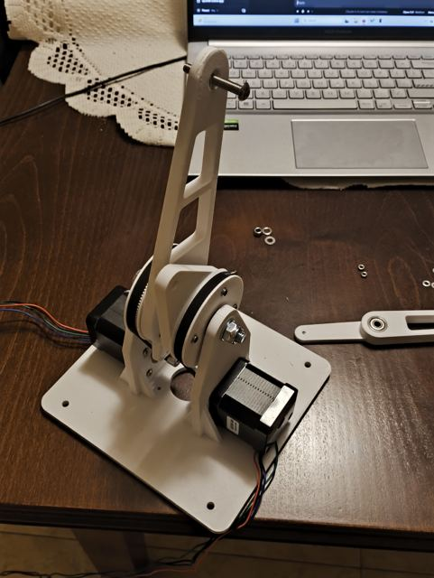
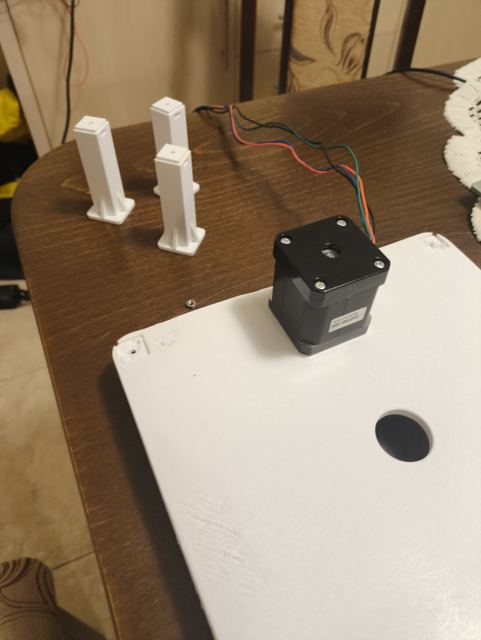
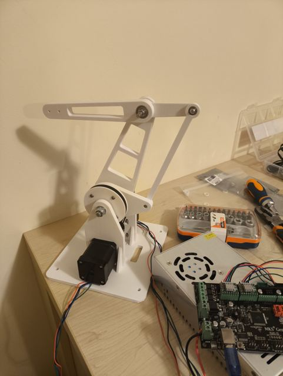
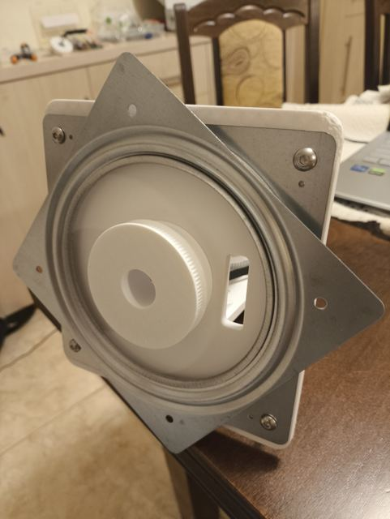

Three-joint robotic manipulator
A robotic arm with three joints that I designed and built myself — mechanics, electronics and control. The project is still evolving: I keep iterating on the design and fixing what testing reveals.
- Joints
- 3
- Drive
- Stepper motors, belts
- Base
- Rotating turntable
- Status
- In progress

Video
Build log

First stepper motor mounted under a base plate.

Belt drive — pulley and belt transferring motion from the motor.

Shoulder bracket on its base plate, with motors and pulleys waiting to be fitted.

Shoulder assembled: two stepper motors driving the joints through belts.

First arm link attached.

Arm standing and wired up to the controller board.

First motion tests, controlled from the laptop.

New base plate with the motor for the rotation joint.

Full arm with both links in place.

Turntable bearing for rotating the whole arm.

Arm mounted on the rotating base — all three joints together.

The manipulator on its stand, controlled from the laptop.